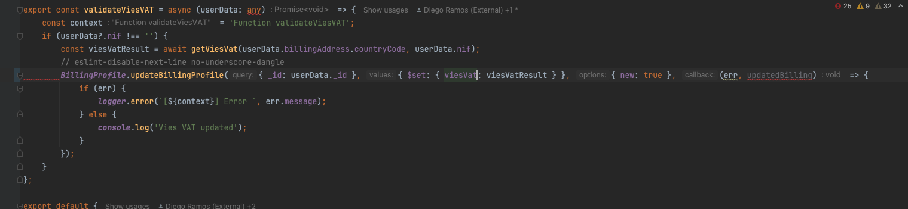
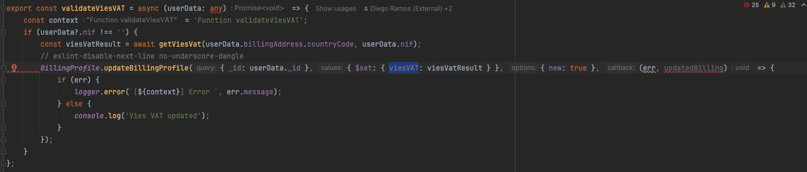
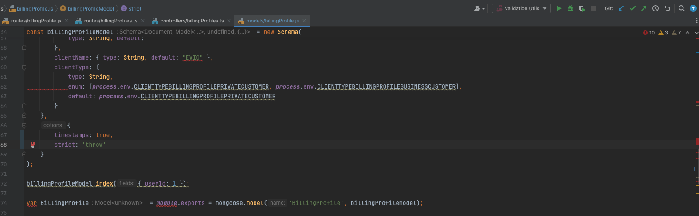

It is very common to use libraries and frameworks when building solutions and things usually go well, but when we deal with very specific situations we can face unexpected results.
Our goal it's simple: Share learnings and behaviors from the tools we use to have the opportunity to create increasingly effective solutions.
While analyzing a ticket related to billing profiles(EVIO-2998), we noticed an issue with the viesVAT field. The field was not being filled in.

We changed the code as below:

So....
It's not a big deal, was a typo, right?
The problem it's a default behaviour on mongoose schemas related with strict configuration.
This configuration simply ignore any field that was not mapped on schema.
We could have some processes to validate these types of problems, integrated tests could be one of them but for the purpose of this talk we will focus on configuration.
The strict configuration can set to throw that handle an expection for non mapped fields on schema making it more explicit and not silencing some unexpected behavior.
